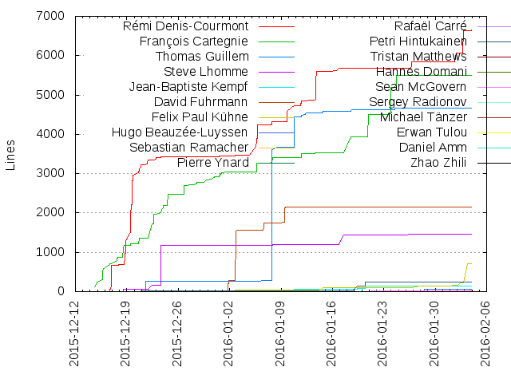
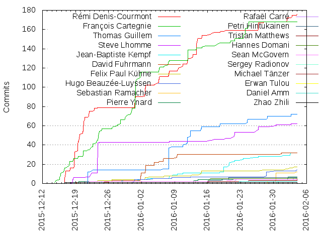

Authors
| Author | Commits (%) | + lines | - lines | First commit | Last commit | Age | Active days | # by commits |
|---|
| Rémi Denis-Courmont | 176 (27.59%) | 6645 | 6601 | 2015-12-04 | 2016-02-03 | 61 days, 4:29:35 | 32 | 1 |
| François Cartegnie | 168 (26.33%) | 5507 | 2604 | 2015-12-14 | 2016-01-24 | 41 days, 4:16:35 | 33 | 2 |
| Thomas Guillem | 72 (11.29%) | 4675 | 731 | 2015-11-17 | 2016-02-02 | 77 days, 2:32:24 | 21 | 3 |
| Steve Lhomme | 62 (9.72%) | 1470 | 1230 | 2015-12-18 | 2016-02-01 | 45 days, 7:05:47 | 11 | 4 |
| Jean-Baptiste Kempf | 32 (5.02%) | 148 | 83 | 2015-12-18 | 2016-02-02 | 46 days, 0:19:32 | 17 | 5 |
| David Fuhrmann | 32 (5.02%) | 2150 | 7000 | 2015-12-19 | 2016-01-31 | 43 days, 5:34:43 | 9 | 6 |
| Felix Paul Kühne | 17 (2.66%) | 718 | 185 | 2015-12-02 | 2016-02-02 | 62 days, 2:45:59 | 10 | 7 |
| Hugo Beauzée-Luyssen | 14 (2.19%) | 55 | 32 | 2015-12-21 | 2016-02-03 | 44 days, 7:07:53 | 8 | 8 |
| Sebastian Ramacher | 12 (1.88%) | 33 | 33 | 2016-01-01 | 2016-02-03 | 33 days, 2:36:43 | 3 | 9 |
| Pierre Ynard | 7 (1.10%) | 20 | 10 | 2015-12-19 | 2016-02-02 | 44 days, 9:43:37 | 3 | 10 |
| Rafaël Carré | 6 (0.94%) | 10 | 10 | 2016-01-20 | 2016-02-03 | 14 days, 0:19:34 | 4 | 11 |
| Petri Hintukainen | 6 (0.94%) | 243 | 31 | 2015-12-17 | 2016-01-20 | 34 days, 3:04:29 | 5 | 12 |
| Tristan Matthews | 5 (0.78%) | 20 | 6 | 2016-01-08 | 2016-02-03 | 26 days, 4:58:17 | 4 | 13 |
| Hannes Domani | 5 (0.78%) | 9 | 5 | 2016-01-14 | 2016-01-16 | 1 day, 18:13:21 | 3 | 14 |
| Sean McGovern | 4 (0.63%) | 19 | 19 | 2015-12-18 | 2016-01-21 | 33 days, 22:58:14 | 4 | 15 |
| Sergey Radionov | 2 (0.31%) | 3 | 3 | 2016-01-31 | 2016-01-31 | 0:23:26 | 1 | 16 |
| Michael Tänzer | 2 (0.31%) | 2 | 4 | 2016-01-10 | 2016-01-11 | 7:28:33 | 2 | 17 |
| Erwan Tulou | 2 (0.31%) | 8 | 4 | 2015-12-01 | 2016-01-28 | 58 days, 4:33:43 | 2 | 18 |
| Daniel Amm | 2 (0.31%) | 5 | 3 | 2016-01-22 | 2016-01-22 | 0:00:02 | 1 | 19 |
| Zhao Zhili | 1 (0.16%) | 1 | 1 | 2015-12-13 | 2015-12-13 | 0:00:00 | 1 | 20 |
These didn't make it to the top: Thomas Nigro, Salah-Eddin Shaban, Ronald Wright, Olivier Aubert, Odd-Arild Kristensen, Mariusz Wasak, Kornel Lesiński, KO Myung-Hun, Goran Dokic, Andreas Hartmetz, Alex Converse
Only top 20 authors shown
Only top 20 authors shown
| Month | Author | Commits (%) | Next top 5 | Number of authors |
|---|
| 2016-02 | Rémi Denis-Courmont | 7 (26.92% of 26) | Pierre Ynard, Jean-Baptiste Kempf, Felix Paul Kühne, Tristan Matthews, Thomas Guillem | 11 |
| 2016-01 | Rémi Denis-Courmont | 76 (23.68% of 321) | François Cartegnie, Thomas Guillem, David Fuhrmann, Jean-Baptiste Kempf, Steve Lhomme | 25 |
| 2015-12 | François Cartegnie | 108 (37.50% of 288) | Rémi Denis-Courmont, Steve Lhomme, Thomas Guillem, Hugo Beauzée-Luyssen, Felix Paul Kühne | 17 |
| 2015-11 | Thomas Guillem | 3 (100.00% of 3) | | 1 |
| Year | Author | Commits (%) | Next top 5 | Number of authors |
|---|
| 2016 | Rémi Denis-Courmont | 83 (23.92% of 347) | François Cartegnie, Thomas Guillem, Jean-Baptiste Kempf, David Fuhrmann, Steve Lhomme | 26 |
| 2015 | François Cartegnie | 108 (37.11% of 291) | Rémi Denis-Courmont, Steve Lhomme, Thomas Guillem, Hugo Beauzée-Luyssen, Felix Paul Kühne | 17 |
| Domains | Total (%) |
|---|
| remlab.net | 176 (27.59%) |
|---|
| free.fr | 168 (26.33%) |
|---|
| videolan.org | 106 (16.61%) |
|---|
| gllm.fr | 72 (11.29%) |
|---|
| videolabs.io | 51 (7.99%) |
|---|
| gmail.com | 18 (2.82%) |
|---|
| beauzee.fr | 14 (2.19%) |
|---|
| debian.org | 12 (1.88%) |
|---|
| yahoo.fr | 7 (1.10%) |
|---|
| yahoo.de | 5 (0.78%) |
|---|